🏆 Winning the largest AI Hackathon in the World
Dispatch was initially built out of a spontaneous trip to the Berkeley AI Hackathon , where my team won the Grand Prize with $50,000 in investment from Skydeck, and an additional $14,000 in credits from Intel and OpenAI. Post-Hackathon, we decided to take this project further and launched a venture with Skydeck.
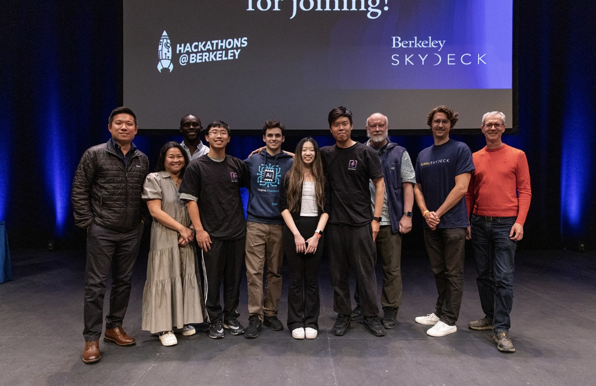The Problem
💬 “How might we empower dispatchers to efficiently manage non-emergency calls in order to increase confidence in addressing critical situations and safeguard the caller's well-being?”
🚨 911 Dispatchers are Overwhelmed
911 dispatchers are overwhelmed with non-emergency calls, which account for 80% of all calls . This leads to long wait times for emergency calls, and inefficient resource allocation . Dispatch aims to solve this problem by automating the process of handling non-emergency calls.
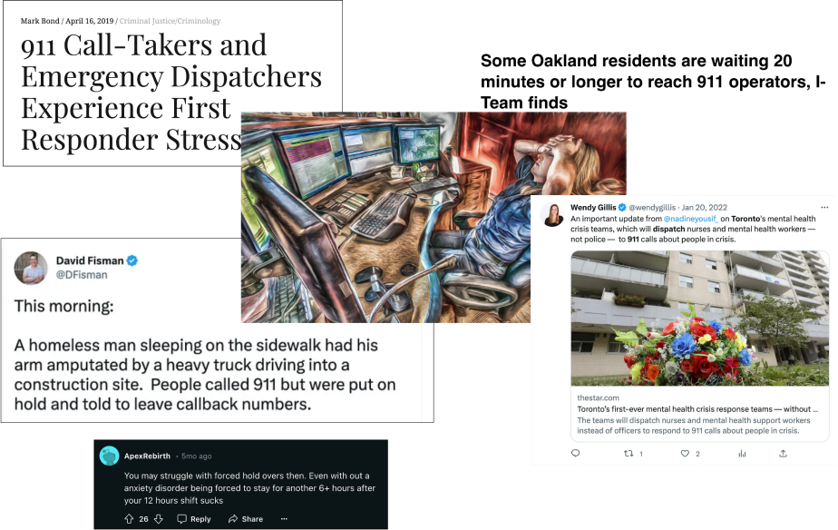🚨 Heart Attack Victim waits 62 Seconds for his call.
The Oakland and LAPD Dispatch have wait times that fail to meet government safety standards almost every day of the year.
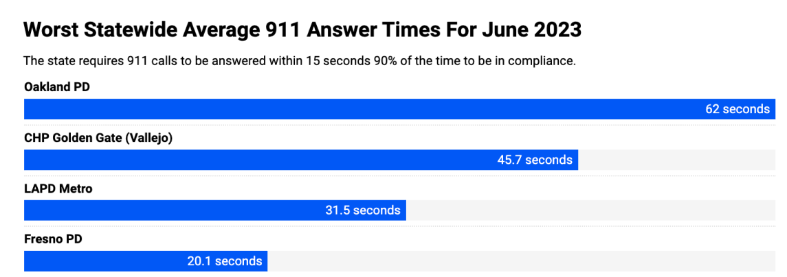Secondary Research
A Life or Death Situation
Imagine a major earthquake striking a densely populated city. Within seconds, thousands of frantic 911 calls flood the emergency call center. Every line is busy, every second counts, but the overwhelmed operators can't answer every call. This isn't just a hypothetical scenario—it's a grim reality for many emergency services today.
Understanding the User
Touring the LAPD Dispatch Center
Driving 60 miles to visit the LAPD
When we got invited to tour the LAPD for an onsite tour, I decided to drive 60 miles to Culver City to talk with users IRL.
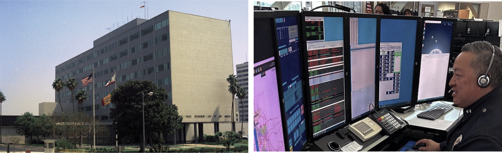Speaking with 10+ Dispatchers and Deputy Chiefs
We plugged into 911 calls to observe procedures firsthand and also spoke with a Staff Psychologist about common dispatcher stressors.
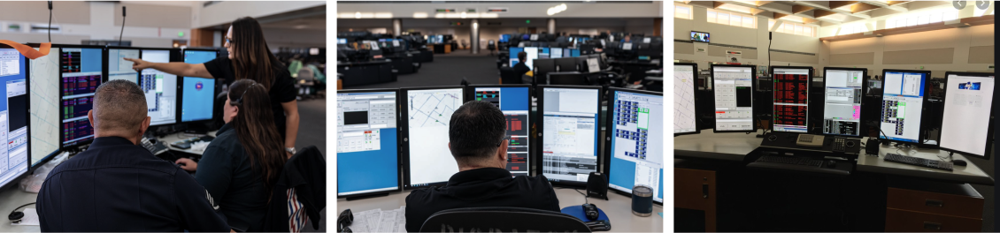Documenting Findings
After the meeting, I transferred my notes to Figjam and identified key workflows and behavioral patterns that would inform the design solution.
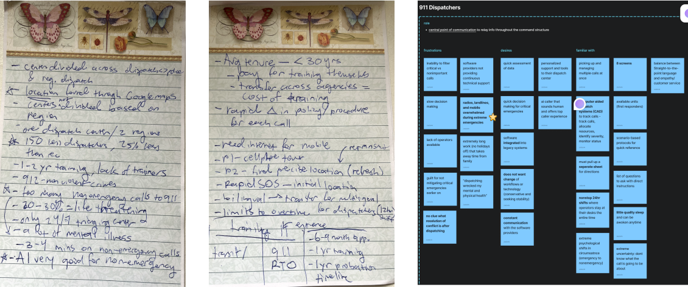“We get a lot of non-emergency calls that distract us from critical calls.”
— LAPD Deputy Chief
Uncovering Patterns
Our conversations with dispatchers, LAPD staff, and previous owners helped us uncover critical problem spaces to tackle. With this, we aimed to identify intervention points where DispatchAI could make the most impact.
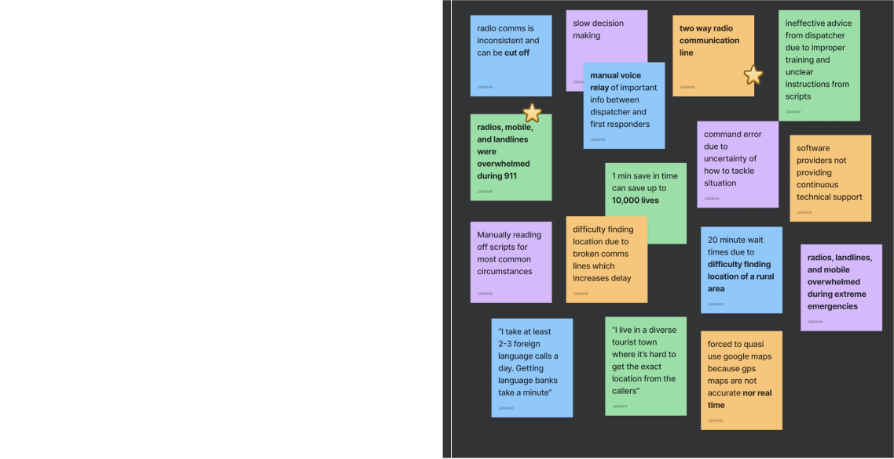 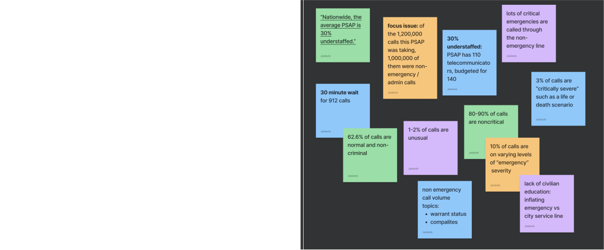 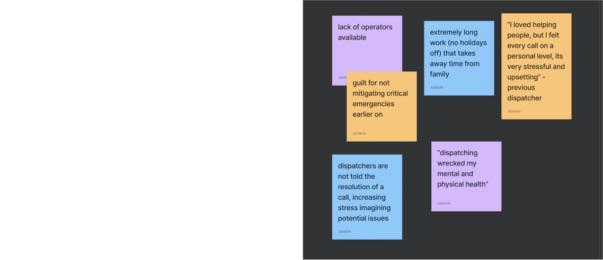
Research Consolidation
Defining the Core User
After consolidating research from expert interviews, field / observational research from the LAPD, and conversations with the staff psychologist, we defined the core frustrations, experience, and aspirations of our target user: John.
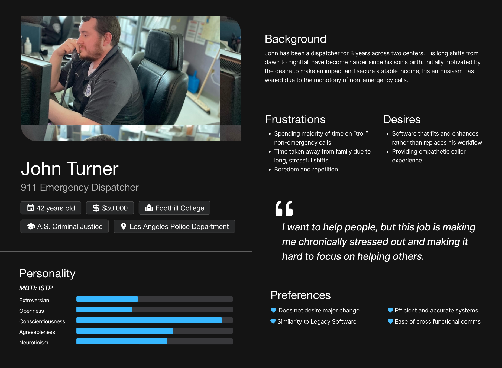Operator Flow
I developed a user flow after our conversation with the LAPD to map out key decision points (currently 3 in total marked by diamonds). The Current operator flow is messy with multiple manual steps and decisions that increase cognitive load . Our goal is to shift this paradigm to give operators back their confidence.
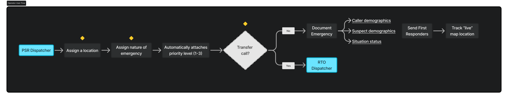User Journey Mapping
This journey map visualizes the steps taken by operators during a 911 call, from the moment a call is received to the dispatch of emergency services. It highlights the pain points and opportunities for improvement in the current system.
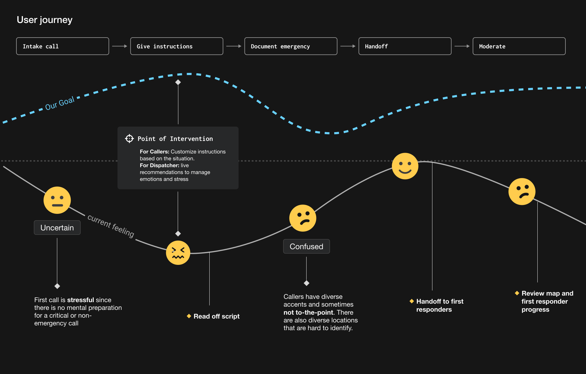Primary Pain Points
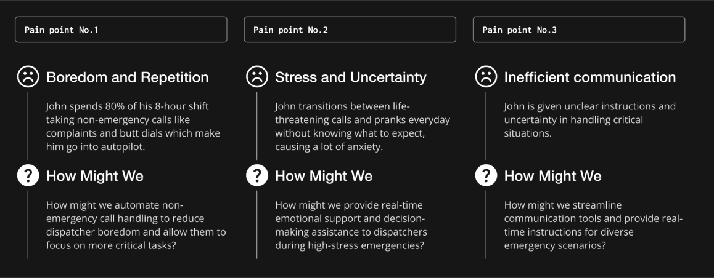Design Strategy
Investigating Need and Priorities
Based on our characterization of the target user, we conclude the following being crucial considerations in our design strategy:
- Maintaining familiar workflows and tools from legacy systems
- Identifying the key touch points that empower decision-making

Communications Flow
Based on what operator needed to make decisions, and their normal operator flow, I created flow diagrams to map distinct operator roles and identify dependencies that affect their decision-making process.
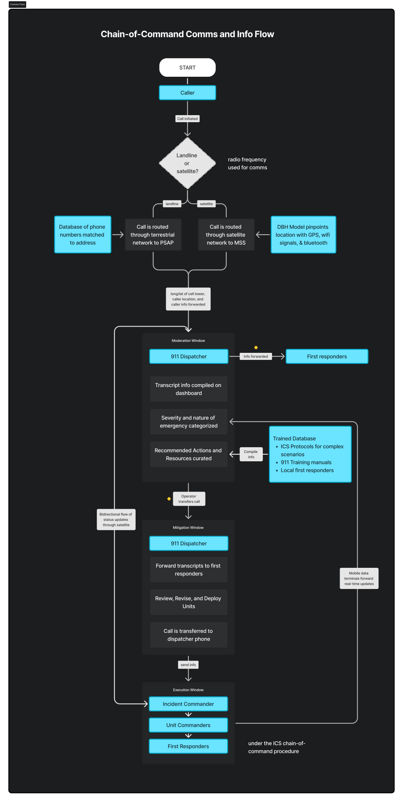Prioritizing Features
With key decision points, operator frustrations, and the user journey defined, we prioritized features that directly addressed the core problem of cognitive overload from nonemergency calls.
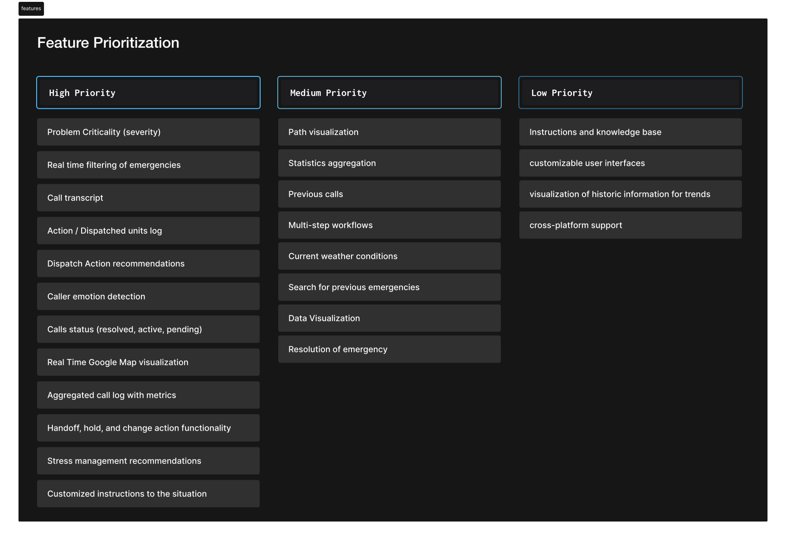Mapping Key Actions and Decision Points with Human-in-the-Loop
Based on the prioritized features, we worked to map each core action on a timeline. We emphasized areas to incorporate humans in the decision-making process as to maintain dispatcher’s autonomy and expertise in the end-to-end emergency cycle.
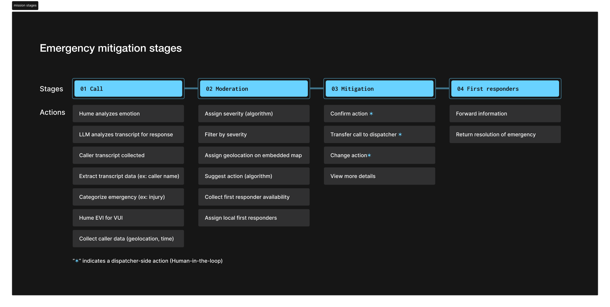Generating Scenarios for Edge Cases
Scenario Generation highlighted different categories of emergencies and mitigation strategies to address them with the DispatchAI platform.
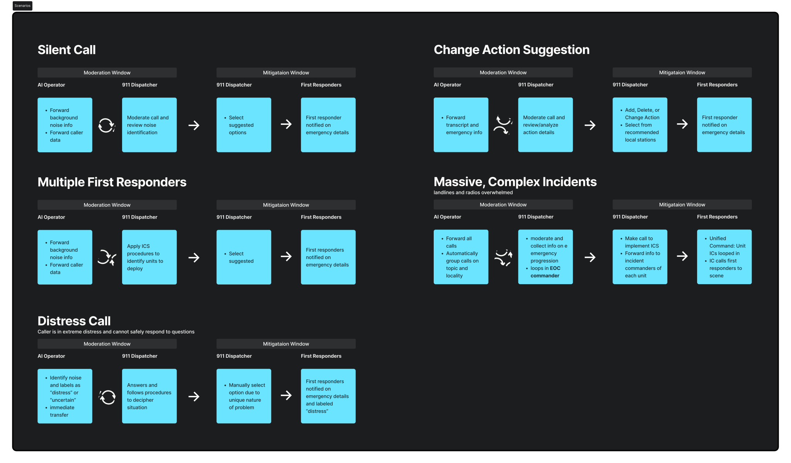KEY INSIGHTS
⏰ Non-Emergency Responses causes critical delays
Research demonstrated that 9/10 calls are noncritical. This is not only exacerbated by the staffing shortage, but causes critical mental health problems for dispatchers. In large-scale crises, delays can result in preventable deaths.
📡 Breakdown of Communication Systems Exacerbate Emergencies
Most calls are built around radio frequency. Interference with these brittle mediums can cause the entire communication line to collapse. This is what happened during the 9/11 attacks when hundreds of firefighter lives were lost due to insufficient communications infrastructure.
🧠 Operator Cognitive Load caused Major Errors
Manual instruction scripts, muffled calls, and quasi geolocation services are daily experiences for dispatchers. This has led to misinformed decisions, inaccurate location identification, and extreme stress for dispatchers.
Design Iterations
Defining Functional Requirements
Our product goal is to design intuitive and customizable modules to enable dispatchers to make quicker decisions with more confidence and less stress.
With my team, we defined several core functional requirements:
- Clear alert system for handoff between the AI and Human Operator
- Incident management panel with real-time action suggestions
- Modular and customizable panels for situational awareness
Low Fidelity Mockups
Dispatch AI is designed around a continuous operational loop where data is collected, analyzed, and integrated to inform real-time decision making . Data is logged and used to inform future decisions.

more to come soon...